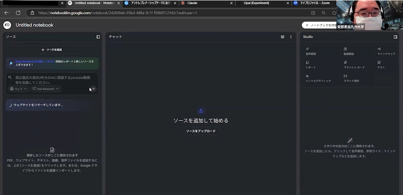

12/19 第2回「研究推進のための生成AI活用講座」開催報告
2025年12月19日（金）16:00〜17:00、大学・研究機関のURAおよび研究開発マネジメント人材を対象に、オンライン（Zoom）で 「第2回 研究推進のための生成AI活用講座」を開催しました。主催はRA協議会 スキルプログラム専門委員会 認定 「生成AIとURA業務の勉強会」で、参加者は68名でした。
1. 開催概要
- イベント名：第2回 研究推進のための生成AI活用講座
- 開催日時：2025年12月19日（金）16:00〜17:00
- 開催形式：オンライン（Zoom）
- 主催：RA協議会 スキルプログラム専門委員会 認定「生成AIとURA業務の勉強会」
- 参加者数：約50名
2. プログラム
- 前回の質問への回答コーナー
- イントロダクション：各種AIツールの戦略的使い分け解説
- 深掘り：NotebookLMの核心的機能と研究推進への応用
- 実技演習：デジタルクローンの作成と政策分析デモ
- Q&Aセッション：実践的な運用とセキュリティについて
- クロージング：次回に向けた宿題の提示
3. 講演内容要旨
(1) AIツールの連携戦略
単一ツールへの依存ではなく、それぞれの強みを活かす「戦略的な使い分け」が提唱されました。代表例として、 以下の位置づけが示されました。
- Perplexity：検索特化型。回答の裏付けを取るための「セカンドオピニオン」として活用
- NotebookLM：信頼できるソース（情報源）のみを基に回答を生成する仕組み。ハルシネーション抑制に寄与
- Felo：自然な日本語生成に強み（Claude系モデル）。NotebookLMで作成したドラフトの「清書・スライド化」に活用可能
(2) NotebookLMの活用シナリオ（研究推進における4つの活用法）
研究推進業務に直結する具体的な活用法として、次の4点が紹介されました。
- デジタルクローンの作成：研究者の過去論文を読み込ませ、客観的な強み・弱みの分析に利用
- 申請書の自動生成：公募要領と研究内容を投入し、「レポート機能」で申請書の叩き台を生成
- 助成情報アシスタント：大量の助成金情報を格納し、研究者ニーズに合わせたマッチングを支援
- 政策・戦略分析：省庁の会議議事録等を横断分析し、大学の戦略立案の根拠づくりに応用
(3) 実演とアウトプット（デジタルクローン等の作成）
- ファストリサーチ機能により、ウェブ情報を即座にソースとしてインポートする実習
- 読み込んだ情報から、マインドマップ／インフォグラフィック／動画解説などを短時間で生成できる即時性のデモ
4. 質疑応答（主な内容）
- Q：動画生成は簡単か？
A：ボタン一つで可能。テイストの選択やカスタム指示（例：SF風）で調整もできる。 - Q：学内の非公開情報は扱えるか？
A：機密情報の直接入力は厳禁。BIツール等で分析した後の「サマリー（機密を含まない結果）」を読み込ませる運用が安全。 - Q：同じソースなら誰でも同じ結果になるか？
A：検索タイミング等でソースに揺らぎが生じる「ソースガチャ」があり、完全一致するとは限らない。
5. 次回開催に向けた宿題
第3回に向け、以下の2点を実践することが求められました。
- デジタルクローンの作成：担当研究者の論文等をソースとした分析
- 申請準備ノートの作成：特定の助成金公募に関する情報の格納と申請準備


＜ 活動報告一覧に戻る